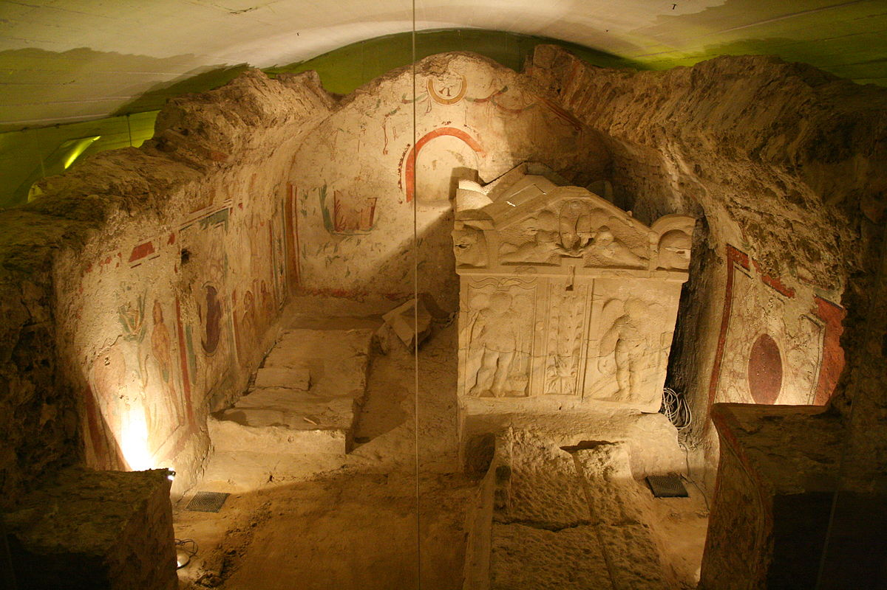

Pannóniában, az egykori római provinciában alapított Sopianae – a mai Pécs – városának 4. századi ókeresztény közössége temetőjében kápolnát, sírkamrákat és épített sírokat is épített. A késő római temető a mai belváros északnyugati részén a székesegyház környékén található. A sírépítmények többsége eredetileg a föld fölött volt. A temetőt már a 18. század végén ismerték, a leghíresebb, az I. számú Péter-Pál sírkamrát 1782-ben fedezték fel a dongaboltozatán tökéletesen fennmaradt festményekkel. A kétszintes kamra festményein Péter és Pál apostol, Mária, József, Noé, valamint Ádám és Éva látható. Jelentős a II. számú, úgynevezett Korsós sírkamra is, ahol egy falfülkében az oltáriszentség megjelenítéseként is értelmezhető kancsó és pohár látható. Ezen kívül fontos építészeti lelet még két kápolna maradványa, ebből az egyik az 5-6. századra datálható. A kétszintes épületeknek kettős funkciójuk volt, egyszerre voltak temetkezési helyek és kápolnák ahol a szertartásokat végezték. Az ókeresztény sírkamrák közül három látogatható.
